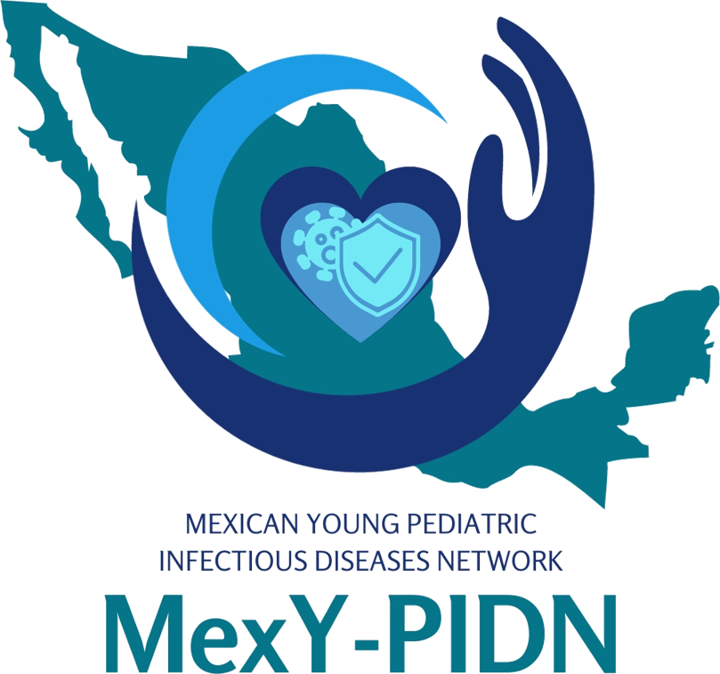

Somos una comunidad de infectólogos pediatras en formación y de reciente egreso que colabora en educación médica, investigación y atención de niñas, niños y adolescentes con enfermedades infecciosas en todo el país.
Quiero ser miembroPróximos eventos
MexY-PIDN reúne a residentes y especialistas jóvenes de hospitales de todo el país para compartir casos, generar evidencia propia y acercar la actualización científica a quienes atienden a la población pediátrica.
Summits, sesiones virtuales y talleres gratuitos con aval de los Consejos de Infectología y Pediatría.
Estudios multicéntricos entre hospitales de la red, como el análisis del brote de tos ferina 2024-2025.
Un espacio para conectar residentes con especialistas, rotaciones, oportunidades y liderazgo académico.
Actividades virtuales y gratuitas, con constancia de participación.
Artículos publicados por integrantes de la red. Cada miembro podrá enviar sus nuevas publicaciones para que aparezcan aquí.
Integrantes de la red responsables de la coordinación académica.
Presidente
Coordinación del Simposio de VIH
Secretaría
Tesorería
Pueden formar parte residentes de infectología pediátrica y especialistas de reciente egreso en México. Al registrarte:
La mesa directiva revisa cada solicitud y te contacta por correo.